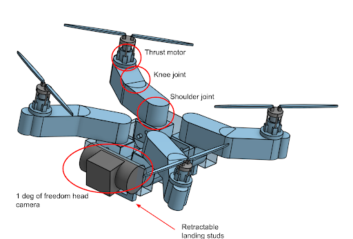
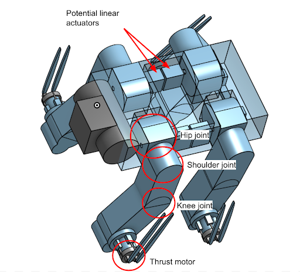
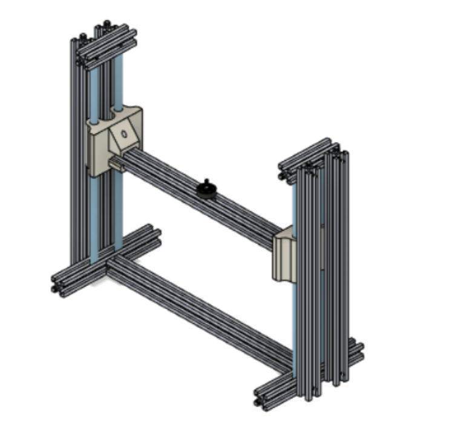
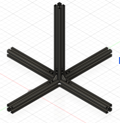
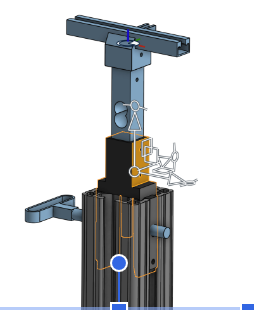
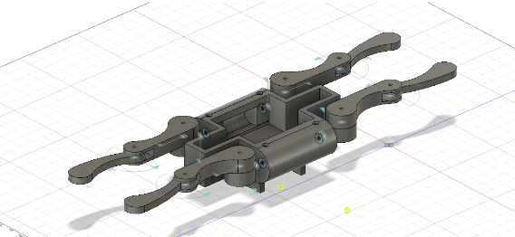
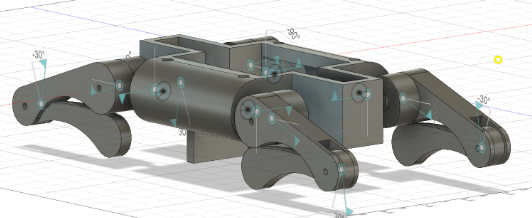
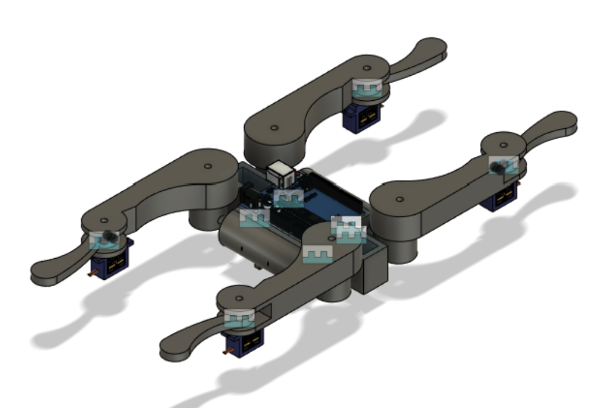

DogCopter is a multidisciplinary robotics project I started and led through the Autonomous Robotics Club at Purdue University. I have always wanted to create an all-terrain robotic vehicle, but I knew a project of this scale required a team with different areas of expertise.
Through the club, I helped establish DogCopter as a project combining mechanical design, aerospace systems, electrical hardware, controls, autonomy, and optimization to explore the challenge of creating a robot capable of both walking and flight.
Club Website Here
As the project manager, my responsibilities included planning timelines, organizing project goals, assisting team members, and coordinating development across multiple engineering disciplines.
DogCopter contains many interconnected systems including mechanical design, aerospace, electrical, controls, autonomy, computer vision, and optimization. My role involved researching each area, understanding the design challenges, and helping integrate each subsystem into one complete robotic platform.
The overall design can be seen below:


Optimization was one of the most important stages during the early development of DogCopter. Since the robot needed to both walk and fly, balancing weight, battery life, thrust, and component selection was critical.
With many possible combinations of motors, batteries, mechanical designs, and hardware components, I developed a MATLAB-based optimization program to evaluate different system configurations.
The program used defined constraints such as weight, walking duration, flight time, and thrust-to-weight ratio to evaluate possible designs. This allowed the team to compare different configurations and make engineering decisions based on data rather than trial and error.
To determine the best combination of propellers, motors, and electronic speed controllers, we designed and fabricated a thrust stand to collect real-world performance data.

After receiving feedback on the initial design, we simplified the structure to make manufacturing easier while maintaining functionality.


The final design was assembled and tested using a motor, ESC, and Arduino system.
For the mechanical subsystem, we focused on creating the overall robot structure and developing mechanisms that supported both walking and flight.
Since the mechanical team was newly formed, an important goal was helping members gain experience with CAD, prototyping, and robotic mechanism development.


These prototypes were 3D printed to evaluate the designs and allow the team to iterate before moving toward more advanced models.

After establishing the foundation for DogCopter and leading the project through its early development phases, I transitioned leadership responsibilities to a new project manager.
I worked with the incoming leadership team to transfer project knowledge, documentation, design decisions, and lessons learned to ensure a smooth transition.
Although I am no longer directly managing the project, I am excited to see the team continue developing DogCopter and building upon the multidisciplinary foundation created across mechanical, aerospace, electrical, controls, and autonomy efforts.
Socials